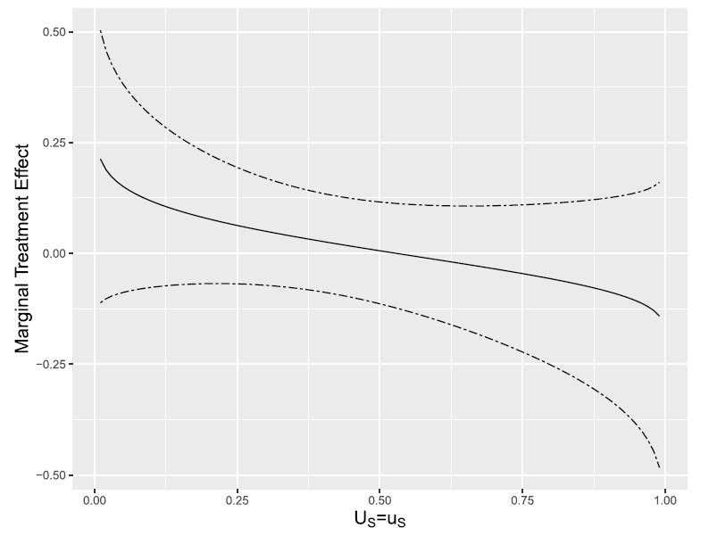

Results
Selection Equation: Who Gets Sponsored?
The selection equation is estimated jointly with the outcome equations via MLE. The results confirm that CI’s selection procedure works as documented: younger and poorer children are significantly more likely to be sponsored.
Table 3. Selection equation results (coefficients and marginal effects).
| Variable | Model 1 | Model 2 | ||
|---|---|---|---|---|
| Coeff. | Marg. Effect | Coeff. | Marg. Effect | |
| Dummy(Age 6) | 1.19*** | 0.215*** | 1.69*** | 0.257*** |
| Dummy(Age 7) | 1.63*** | 0.210*** | 1.85*** | 0.285*** |
| Dummy(Age 8) | 1.43*** | 0.259*** | 1.67*** | 0.271*** |
| Protestant | 1.31*** | 0.236*** | 1.92*** | 0.338*** |
| Asset index | −0.165** | −0.029** | −0.27*** | −0.043*** |
| Treated site | 3.313 | 0.599*** | 3.149 | 0.432*** |
| N | 403 | 403 | 271 | 271 |
*** p<0.01, ** p<0.05, * p<0.1. Standard errors in parentheses.
Key patterns:
- Age-at-arrival dummies work as instruments. Children who were 6, 7, or 8 years old when CI arrived are approximately 21–26 percentage points more likely to be sponsored than older children. This is strong and precisely estimated.
- Protestant affiliation raises selection probability by ~24–34 pp, consistent with CI’s church-based implementation.
- Higher asset index (wealthier households) reduces selection probability by 3–4 pp, confirming CI’s targeting of poorer households.
Outcome Equation: What Drives Aspirations?
Table 4. Marginal effects on the probability of aspiring to higher education.
| Variable | Model 1 (N = 403) | Model 2 (N = 271) | ||
|---|---|---|---|---|
| Sponsored | Non-Sponsored | Sponsored | Non-Sponsored | |
| Dummy(Prospera) | 0.057 (0.108) | 0.076 (0.091) | 0.112 (0.154) | 0.005 (0.127) |
| Dummy(Male) | −0.043 (0.074) | −0.119** (0.055) | −0.078 (0.097) | −0.035 (0.080) |
| Asset index | 0.016 (0.024) | 0.336*** (0.022) | −0.011 (0.033) | 0.060** (0.030) |
| Parental education | 0.027** (0.013) | 0.023** (0.010) | 0.050*** (0.017) | 0.024 (0.015) |
| Distance to university (km) | −0.006 (0.0008) | 0.0004 (0.0008) | 0.000 (0.001) | 0.001 (0.001) |
| \(\rho_{HE}\) (perceived returns) | — | — | −0.113 (0.072) | 0.016 (0.069) |
| E[ATE(x)] | 0.016 (0.083) | −0.008 (0.009) | ||
| E[ATT(x)] | 0.170 (0.183) | 0.204 (0.180) | ||
Bootstrap standard errors in parentheses. *** p<0.01, ** p<0.05, * p<0.1.
Notable patterns:
- Parental education consistently predicts aspirations in both groups, with slightly larger effects for sponsored children in Model 2.
- Asset index is strongly predictive for non-sponsored children, but not for the sponsored group.
- Males aspire less to higher education than females among non-sponsored children.
- Perceived returns (\(\rho_{HE}\)) are not significant in either group, suggesting beliefs about income do not strongly drive aspirations at ages 12–15.
Mean Sponsorship Effects
Model 1: E[ATT] ≈ 17 percentage points (not statistically significant)
Model 2: E[ATT] ≈ 20 percentage points (not statistically significant)
The direction is consistent with the broader CI literature. Wydick, Glewwe, and Rutledge (2013) found 1.03–1.46 additional years of schooling in adult outcomes. If a 20 pp increase in aspiration translates proportionally into behavior, this implies approximately 8 more months of schooling, in the same ballpark.
Why is the effect not statistically significant? Two explanations are complementary:
Statistical: The sample is small (N = 163 sponsored), the model has many parameters, MLE with numerical integration amplifies uncertainty, and bootstrapped standard errors add further conservatism.
Substantive: Aspirations at ages 12–15 may be driven by factors CI does not directly address. Ross et al. (2021) found that CI in Mexico did not affect self-esteem or optimism, and these psychological channels may matter more than material support for aspiration formation at this stage. In rural contexts where higher education is perceived as unrealistically ambitious, short-term attainable goals may be more motivating than long-term aspirations.
Anecdotal evidence and conversations with local CI staff suggest that school attendance is de facto required for continued sponsorship. This informal requirement may be the actual mechanism: more time in school → stronger educational identity → higher aspiration. This would explain why the effect in the literature concentrates in schooling attainment rather than stated aspirations.
The Marginal Treatment Effect
The figure below (Figure 2 in the paper) plots the MTE curve for Model 1 as a function of the selection resistance \(u_S\), along with a 95% confidence interval.

Reading the curve:
- Horizontal axis (\(u_S\)): The selection resistance. Low values correspond to children with the highest unobserved propensity to be sponsored (e.g., very motivated families in CI communities). High values correspond to children unlikely to be selected.
- Vertical axis: The expected difference in aspiration probability between sponsored and non-sponsored status, for children at that margin.
- Declining pattern: The MTE starts positive and declines with \(u_S\). This means the children most likely to be selected benefit more from sponsorship than those least likely to be selected.
The no-trade-off result. The positive correlation between selection and treatment effect means that CI’s targeting does not create the typical efficiency-equity dilemma. The children most in need, who are also the ones most likely to be selected, appear to gain the most from the program. CI does not face the dilemma of choosing between the most vulnerable and the highest-impact recipients.
This finding is reassuring for CI from an organizational standpoint: their targeting procedure is not undermined by the possibility that the most vulnerable gain the least.
Subjective Expectations: A Summary
The perceived return to higher education (\(\rho_{HE}\)) is not a significant predictor of aspirations in either model. Three possible interpretations:
- At ages 12–15, children may not yet use income expectations as a primary input into educational decisions, social norms, parental pressure, and role models may dominate.
- The income expectations may be a noisy measures of the underlying beliefs that actually shape decisions.
- In very poor contexts, the perceived probability of accessing higher education (not just the return) may be the binding constraint. Even children who believe returns are high may not aspire to university if they think it is unattainable for someone in their situation.